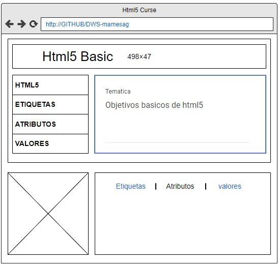

Estructura básica de Html5 (etiquetas, atributos y valores)
Objetivos
Objetivo General
Sus objetivos principales son mejorar el lenguaje dando soporte para los últimos objetos multimedia mientras
se mantiene fácilmente legible por los humanos y a su vez ser comprendido constantemente por
ordenadores y dispositivos (navegadores web, programas de análisis, etc.).
A raíz de sus predecesores inmediatos HTML 4.01 y XHTML 1.1, HTML 5 es una respuesta al hecho de que el código HTML y XHTML,
de uso común en la web, tienen una mezcla de características introducidas por diversas especificaciones,
junto con las introducidas por los productos de software. También es un intento de definir un único lenguaje de etiquetas que puede ser escrito en HTML o XHTML.
Objetivos especificos
- Reconocer e indentificar las nuevas características del standard html de WWW (World Wide Web)
- Aprender el Uso correcto del lenguaje web html5
- Desarrollar una pagina web siguiendo las indicaciones y herramientas de html5
- Lograr que el estudiante comprenda la nueva tendencia del lenguaje html5 que representa la estrcutura y contenido de los sitios web
Materiales Html5
Contenidos Virtuales Estudiantiles HTML5
Etiquetas Html5
Video Explicativo : https://www.youtube.com/watch?v=_N9SEy-OLXw
Material teórico : https://brandominus.com/blog/creatividad/todas-etiquetas-html5/
Atributos Html5
Video Explicativo : https://www.youtube.com/watch?v=152CxzbP1to&feature=emb_title
Material teórico : https://developer.mozilla.org/es/docs/Web/HTML/Elemento/input#Atributos
Valores Html5
Video Explicativo : https://www.youtube.com/watch?v=EY-Ye31sOvM
Material teórico de apoyo: https://www.htmlquick.com/es/reference/tags/input-text.html
Contenido del Curso
A continuación veremos una breve introducción de cada una de las etiquetas que aprenderemos durante el curso
- Etiquetas Html5
Para terminar esta lección vamos a aprender el significado de ocho de las etiquetas que con más frecuencia tendremos que usar cuando creemos páginas web:
- <p> </p> Representa un parrafo
- <br> Representa un salto de linea
- <h1> </h1> Esta etiqueta se utiliza para representar el encabezado de una página, como si fuera el índice de un libro. Puede variar desde 1 hasta 6 para diferenciar subniveles
- <ul> </ul> Representa una lista de elementos, donde el orden de los elementos no es importante - esto quiere decir que el cambio del orden no modifica el significado
- <ol> </ol> Representa una lista de elementos, donde el orden de los elementos sí es importante - esto quiere decir que el cambio del orden modifica el significado
- <li> </li> Representa un elemento de la lista y su padre siempre tiene que ser una etiqueta ol o ul.
- <strong> </strong> Representa algo muy importante, serio (para avisos o precauciones) o urgente (que debe ser leído antes)
- <em> </em> Sirve para enfatizar en el contenido
- <!--> <--> se utiliza para añadir comentarios dentro del código que el usuario no podrá ver. Por ejemplo para añadir notas de tareas pendientes, aclaraciones que nos ayuden a nosotros o a otras personas a entender el código, etc
- Atributos Html5
Aunque cada una de las etiquetas HTML define sus propios atributos, encontramos algunos comunes a muchas o casi todas las etiquetas, que se dividen en cuatro grupos según su funcionalidad:
- Atributos básicos
- Atributos de internacionalización
- Atributos de eventos
- Atributos de foco
Atributos básicos
Los atributos básicos se utilizan en la mayoría de etiquetas HTML y XHTML, aunque adquieren mayor sentido cuando se utilizan hojas de estilo en cascada (CSS):
- id="texto" Establece un indicador único a cada elemento
- class="texto" Establece la clase CSS que se aplica a los estilos del elemento
- style="texto" Aplica de forma directa los estilos CSS de un elemento
- title="texto" Establece el título del elemento (Mejora la accesibilidad)
Atributos Internacionalizacion
Estos atributos se utilizan en aquellas páginas que muestran sus contenidos en varios idiomas y las que quieran indicar de forma explícita el idioma de sus contenidos:
- lang="codigo" Indica el idioma del elemento
- xml:lang="codigo" Indica el idioma del elemento, aunque tiene más prioridad que el atributo anterior y es obligatorio si se incluye el atributo lang
- dir Indica la dirección del texto
Atributos de Evento
Estos atributos se utilizan en las páginas web que incluyen código JavaScript para realizar acciones dinámicas sobre los elementos de la página:
- onclick Ejecuta la acción cuando se realiza un clic sobre el elemento
- ondblclick Ejecuta la acción cuando se realiza un doble clic sobre el elemento
- onmousedown Ejecuta la acción cuando se detecta el botón pulsado del ratón
- onmouseup Ejecuta la acción cuando se detecta que se ha soltado el botón del ratón
- onmousemove Ejecuta la acción cuando se detecta el movimiento del ratón sobre el elemento
- onmouseout Ejecuta la acción cuando el ratón abandona el elemento
- onmouseover Ejecuta la acción cuando se detecta que el ratón se sitúa sobre el elemento
- Valores Html5
El elemento HTML <input> se usa para crear controles interactivos
para formularios basados en la web con el fin de recibir datos del usuario. Hay disponible una amplia variedad de tipos de datos de entrada y widgets de control,
que dependen del dispositivo y el agente de usuario. es uno de los más potentes y complejos en todo HTML debido a la gran cantidad de combinaciones de tipos y atributos de entrada.
Atributos
Este elemento incluye los atributos globales, y los indicados a continuación.
El tipo de control a mostrar. Su valor predeterminado es text, si no se especifica este atributo. Los posibles valores son:
- button : Botón sin un comportamiento específico.
- checkbox : Casilla de selección. Se debe usar el atributo value para definir el valor que se enviará por este elemento.
Se usa el atributo checked para indicar si el elemento está seleccionado. También se puede usar el atributo indeterminate
(el cual solo se puede establecer programaticamente) para indicar que la casilla está en un estado indeterminado (en la mayoría de las plataformas,
se dibuja una línea horizontal a través de la casilla).
- color : Control para espicificar un color. Una interfaz de selección de color no requiere más funcionalidad que la de aceptar colores simples como texto.
- date : Control para introducir una fecha (año, mes y día, sin tiempo).
Los conceptos básicos fueron tomados del siguiente artículo: https://libro.cursohtml5desdecero.com/html5_primeros_pasos/etiquetas_basicas.html
Mockup Index
